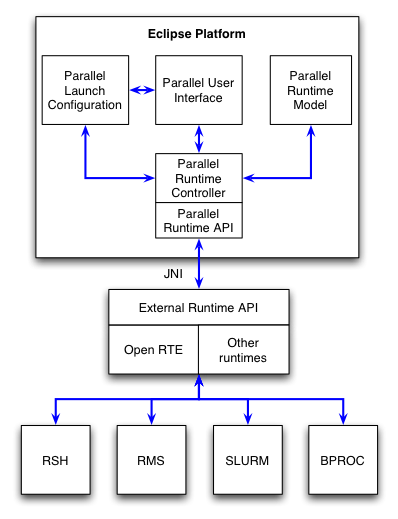
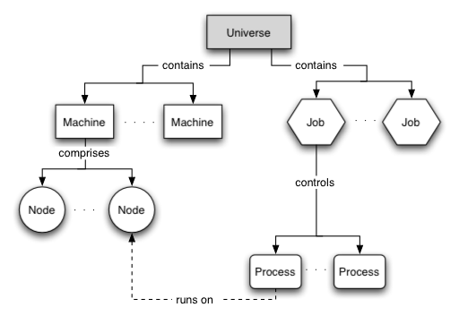

PTP Project 1.0 Plan (Draft)
Initial Document January 6, 2004
Please send comments about this draft plan to the eclipse.technology.ptp
newsgroup.
This document describes the initial plan for achieving version 1.0 of the PTP.
Release deliverables
The release deliverables:
- Source code release for PTP Project.
- PTP Project (downloadable).
- PTP runtime binary distribution (downloadable).
Release milestones
Current versions of PTP are built with Eclipse platform 3.0.1 and CDT 2.1, however the initial PTP releases will target Eclipse platform 3.1 and CDT 3.0.
The milestones are:
July 1,2005
- March 4, 2005 - Milestone 1 - stable build reflecting progress
October 1 , 2005
- June 3, 2005 - Milestone 2 (1.0) - stable build, feature complete
The PTP consists 5 subprojects. Each subproject is covered in it's own section:
The Execution Environment provides the interface between Eclipse and a parallel runtime system that is used to execute programs on a parallel machine. Unlike a normal sequential runtime, launching a parallel program is complicated by the number of different parallel architectures, each with its own specialized commands for managing the execution of programs. Although there is some standardization in the way to write parallel codes (such as MPI), there is little standardization in how to launch, control and interact with a parallel program. To further complicate matters, many parallel systems employ some form of resource allocation system, such as a job scheduler. In many cases, execution of a parallel program must be managed by the resource allocation system, rather than by direct invocation by the user.
Due to the complex nature of interfacing with many different parallel runtime systems, our plan is to use an abstract parallel model within the Eclipse environment and provide a single parallel runtime interface to the outside world. Architecture specific details of the parallel system(s) will then be managed by a middleware layer that will provide a common set of services for interacting with arbitrary parallel runtime and resource allocation systems. This middleware layer will use the Open MPI runtime component (which is separate, and independent, from the actual MPI implementation). The following diagram shows the proposed architecture.

The execution environment comprises four main components: abstract parallel model, parallel runtime controller, parallel user interface, and parallel launch configuration. Each of these is discussed in more detail below.
The Open MPI runtime provides a range of services that are required for parallel support in Eclipse. These include:
- remote process management
- event notification
- job connection/reconnection
- remote I/O management
- resource management
- state of health services
These services are provided using an architecture neutral API that vastly simplifies the interface between Eclipse and the many parallel runtime systems. In addition, the Open MPI runtime has planned support for a wide range of legacy message passing systems, and can also be used for parallel programs that use the shared memory model.
Committed Items
Abstract parallel model (in progress)
Unlike execution support for sequential languages, the parallel execution environment must maintain an internal model that represents the state of external components, such as parallel machines, resource allocation systems, and the executing program themselves. The following is a conceptual diagram of the model.

The universe is the top most object for managing the execution environment. There can be any number of machines and jobs in a universe. Each machine is composed of an arbitrary number of nodes. A node is where computation is undertaken, and may be a remote system in the case of a distributed memory architecture, or a local processor in the case of an SMP machine. A job is a unit of work that is suitable for a resource allocation system. Once a job is scheduled for execution, it causes processes to be started on the appropriate nodes of one or more machines. A process is an instruction stream that performs some computation. The job then provides a reference point for each process that is participating in the parallel execution. Machines, nodes, processes, and jobs all have attributes that reflect the status of the particular component.
Parallel runtime controller (in progress)
The parallel runtime controller is responsible for controlling interaction between the parallel tools platform components and the external runtime. It undertakes the following actions:
- starting and stopping the external runtime interface
- reconnection to existing parallel jobs
- launching a parallel job
- terminating a parallel job
- notification of status changes
- managing I/O streams
Communication between Eclipse and the external runtime is via Java Native Interface calls to a C library, which leads to a simple, efficient API that is suitable for use with other runtime systems in the future.
User interface elements (in progress)
Another significant difference between runtime support for sequential and parallel programs, is the need to be able to monitor the status of machine during program execution. In addition, where a resource allocation system is employed, a visual indication of the status of jobs as they progress through the queues is required. To accomplish this, our intention is to develop a number of user interface elements that, by utilizing services supplied by the middleware layer, will provide the user with the ability to monitor and control system and job status. A prototype user interface element for displaying machine, node and process status information is shown below.
User interface elements that are required for the execution environment are:
- machine, node and process status
- job status
- resource allocation status
- launch configuration
- process details
- process standard I/O
- others?
Parallel launch configuration (in progress)
The parallel launch configuration uses the launch framework to manage the execution of a parallel program. The parallel launch configuration allows the user to specify the resource requirements necessary for correct execution of the program. This might include resources such as the number of processes, the type of network to use for interprocess communication, the amount of memory required, and the amount of time required to execute the program. The image below shows an early implementation of the parallel launch configuration dialog.

After the resource information has been specified, the job is ready to be launched. Pressing the 'run' button will cause the launch configuration to pass the job information to the runtime controller, which will schedule the job for execution by the external runtime. Jobs that require resources to be allocated before execution will be placed in the appropriate queue, and the user will be notified once the job begins execution. Jobs that can be run interactively will be scheduled for immediate execution by the external runtime system.
Proposed Items
Pre/post execution data file management
Parallel programs typically require one or more input data files, and may generate one or more output data files. Unlike sequential execution where the program executes on the local machine, parallel programs will normally execute on one or more remote machines. This complicates data file management, because the correct data file must be available to each process prior to execution. In addition, if the parallel processes produce individual output data files, these may need to collected from remote systems, then post-processed in some manner. There are a variety of methods for managing input/output data files, including network file systems, scripts, etc. Ideally, however, the execution environment would provide some standard mechanisms for managing data files in a range of different environments.
Remote build/launch capability
Although it is possible to run Eclipse in the same environment as the parallel programs (e.g. using X-Windows), it would be much more convenient if Eclipse was running on the users local workstation (laptop, etc.). The Open MPI runtime supports this model of parallel execution, however there are a number of other issues that also need to be considered. In particular, it is unlikely that the users workstation contains the necessary tool chain, libraries and header files that are required to build the parallel program. To overcome this, it will be necessary to provide a remote build environment in addition to the remote execution environment.
The parallel debugger is a key component of the Parallel Tools Plaform. The debugger relies on the services of the execution environment to launch a parallel program so that each process is individually controlled by the debugger. Because a parallel program can consist of many thousands of processes, this control mechanism must be implemented in a scalable manner.
Committed Items
Debug model.
User interface elements.
Proposed Items
Committed Items
Proposed Items
Committed Items
Proposed Items
Committed Items
Proposed Items